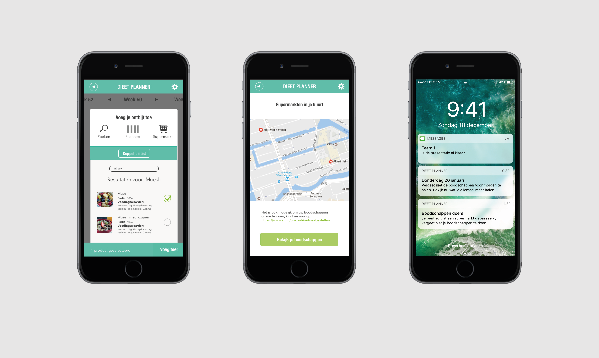

Dieet planner
Wat is de vraag?
Bij dit project was het de bedoeling dat er een sporter geholpen werd naar hun droom: een goede medaille op de Olympische spelen. Om dit doel te bereiken hebben wij een dieetplanner app gemaakt naar wens van ons sporter Teun Bruijne.
Waar gaat het eigenlijk over?
Project 2 was het eerste teamproject wat ik dit jaar gedaan heb. Ik vond het erg leerzaam om samen in een team te werken. Ook ben ik er achter gekomen dat ik vrij veel taken op me neem, dit ben ik met andere vakken anders gaan aanpakken. In project 3 heb ik er daarom voor gekozen om projectleider te zijn om zo te zorgen dat alle taken eerlijk verdeeld worden.
Project details
Project 2november 2016
In samenwerking
Looptijd 1 semester
